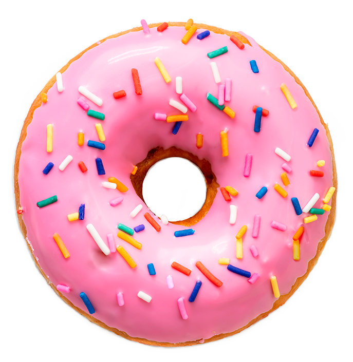

La historia comienza en Holanda, donde se preparaban unos panecitos o bollos nombrados "Olykoek" que significa "pan aceitoso" y es que para cocinarlo se freían en manteca de cerdo, pero era más bien redondo, parejo. La receta fue llevada en el siglo XVIII del país nórdico a Nueva Amsterdam por los colonos holandeses, actualmente Manhattan, en Estados Unidos. La preparación fue cambiando, ya que en el Nuevo Mundo se emplearon otro tipo de especias e ingredientes, pero había algo que no terminaba de encajar.
DONAS, DULCES MOMENTOS
RECETAS

Fresas
Cookies & Cream
Manjar
Chocolate
Maracuyá
Marshmallow
NUESTRAS FAVORITAS
.jpg)
Estos donuts son pura fantasía: deliciosos por dentro y supervistosos por fuera gracias a los glaseados y 'toppings' de colores con los que los son cubiertos.

Las donas de chocolates son una de las mejores elecciones. Celebra el fin de semana en familia con estas ricas donas hechas al horno

Estas donas las puedes combinar en cualquier evento. Inspiradas en el amor universal por las donas.

Hay infinidad de recetas para todos los gustos. Las donas pueden venir en muchos colores y sabores ¡No hay límites!